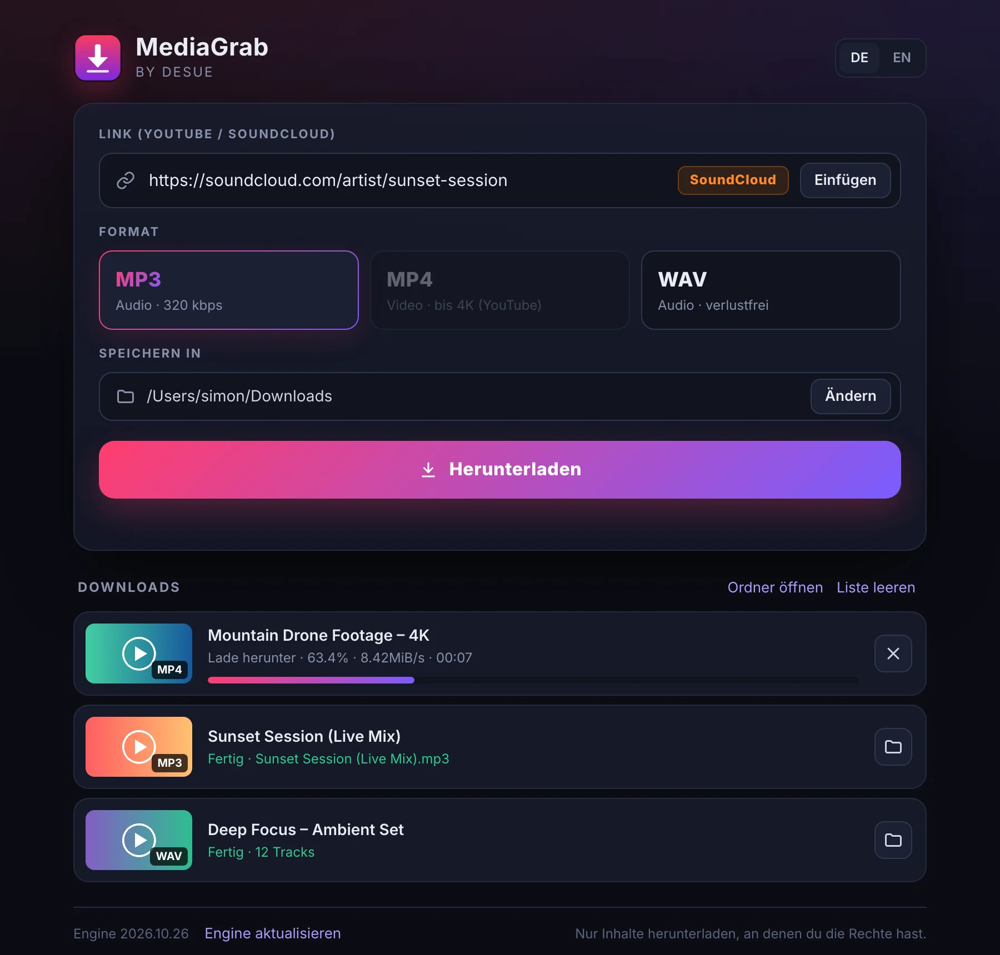
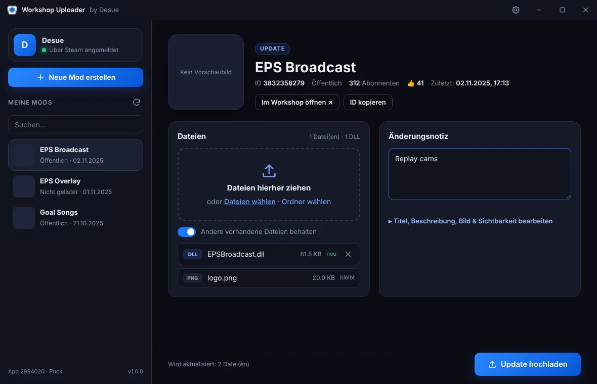

Kostenlose Desktop-Apps
Kleine Tools,
die einfach funktionieren.
Gebaut von Desue. Kein Account, keine Werbung, kein Abo – herunterladen, installieren, loslegen.
MediaGrab
Link einfügen, Format wählen, fertig. Videos und Musik von YouTube und SoundCloud als MP3, MP4 oder WAV speichern.
- MP3 mit 320 kbps, Cover und Titel
- MP4 bis 4K – oder 1080p, das überall läuft
- WAV verlustfrei für DJs und Produzenten
- SoundCloud-Sets und Playlists komplett in einem Rutsch
- Mehrere Downloads gleichzeitig, mit Fortschritt
- Aktualisiert sich selbst – bleibt mit YouTube kompatibel
Bitte nur Inhalte herunterladen, an denen du die Rechte hast oder die zum Download freigegeben sind.

Workshop Uploader
Mods für Puck in den Steam Workshop hochladen – ohne Konsole, ohne Skripte. Einfach mit Steam anmelden und Dateien reinziehen.
- Anmeldung über Steam – kein Passwort nötig
- Alle deine Mods auf einen Blick, mit Abonnenten
- Drag & Drop für Dateien und ganze Ordner
- Neue Mods mit Titel, Bild und Sichtbarkeit anlegen
- DE · EN · CS – Deutsch, Englisch, Tschechisch

Installation
Die Apps sind nicht bei Microsoft oder Apple signiert (das kostet jährlich Geld). Beim ersten Start fragt dein System deshalb einmal nach.
Windows
- Setup-Datei herunterladen und doppelklicken.
- Erscheint „Der Computer wurde durch Windows geschützt“: auf Weitere Informationen und dann Trotzdem ausführen klicken.
- Installer durchklicken – fertig. Die App liegt auf dem Desktop und im Startmenü.
macOS
- Die passende Zip laden: Apple Silicon für M1–M4, Intel für ältere Macs ( → Über diesen Mac).
- Entpacken und MediaGrab in den Ordner Programme ziehen.
- Sagt macOS „beschädigt“ oder „nicht verifiziert“: Terminal öffnen und diese Zeile einfügen:
xattr -cr /Applications/MediaGrab.appFAQ
Kostet das was?
Nein. Beide Apps sind kostenlos, ohne Werbung und ohne Account.
Warum warnt Windows / macOS?
Weil die Apps nicht mit einem kostenpflichtigen Entwickler-Zertifikat signiert sind. Das ist bei kleinen, kostenlosen Tools üblich. Die Schritte oben erklären, wie du sie trotzdem öffnest.
MediaGrab lädt nichts mehr – was tun?
YouTube ändert sich oft. Unten in der App auf „Engine aktualisieren“ klicken – meist ist das Problem danach weg. Die App macht das beim Start auch automatisch.
Warum klingt SoundCloud als WAV nicht besser?
SoundCloud liefert meist nur 128 kbps. WAV oder 320 kbps machen die Datei größer, aber nicht besser als das Original.
Open-Source-Komponenten
MediaGrab nutzt yt-dlp und FFmpeg. Die Apps basieren auf Electron.